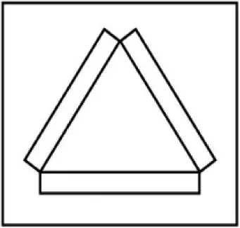
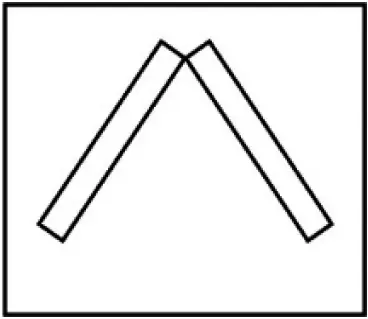
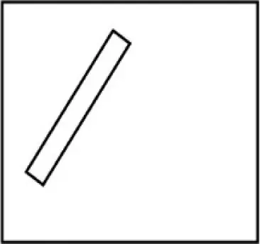
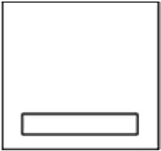

Artikel 12.02 Functie van de waarschuwingsposten op het riviergedeelte Oberwesel – St. Goar
Rijnvaartpolitiereglement 1995
1 Het riviergedeelte dat door de districtscentrale Oberwesel wordt gewaarschuwd (riviergedeelte met waarschuwingsposten), bevindt zich in de sector van km 548,50 tot km 555,43 (bijlage 9).
2 In het riviergedeelte Oberwesel–St. Goar zijn de volgende waarschuwingsposten opgesteld:
Post A: km 550,57, linkeroever, bij de Ochsenturm te Oberwesel;
Post B: km 552,80, linkeroever, bij de Kammereck;
Post C: km 553,61, linkeroever, bij de Betteck;
Post D: km 554,34, linkeroever, tegenover de Loreley («Die Lützelsteine»);
Post E: km 555,43, linkeroever, bij Die Bank.
3 De nadering van afvaart, met uitzondering van kleine schepen, wordt aan de opvaart aangekondigd door de waarschuwingsposten A, C, D en E.
Op de betreffende gedeelten toont elke waarschuwingspost zijn lichttekens aan de opvaart, op boven elkaar geplaatste borden als volgt:
Bord | Nr. van het gedeelte | Bovenstroomse grens van het gedeelte | Benedenstroomse grens van het gedeelte |
Post A: bij de Ochsenturm | |||
Boven | 1 | km 548,50 | km 549,50 |
Onder | 2 | km 549,50 | km 550,57 |
Post C: bij de Betteck | |||
Boven | 3 | km 550,57 | km 551,30 |
Midden | 4 | km 551,30 | km 552,40 |
Onder | 5 | km 552,40 | km 553,60 |
Post D: tegenover Loreley («Die Lützelsteine») | |||
Boven | 4 | km 551,30 | km 552,40 |
Midden | 5 | km 552,40 | km 553,61 |
Onder | 6 | km 553,61 | km 554,34 |
Post E: bij Die Bank | |||
Boven | 6 | km 553,61 | km 554,34 |
Onder | 7 | km 554,34 | km 555,43 |
4 De door de waarschuwingsposten gegeven tekens hebben voor de betreffende gedeelten de volgende betekenis:
a) drie witte lichtstrepen in de vorm van een driehoek (fig. 1): op het gedeelte bevindt zich afvarend ten minste één samenstel met een lengte van meer dan 110 m.

b) twee witte lichtstrepen in de vorm van een dak (fig. 2): op het gedeelte bevindt zich afvarend ten minste één samenstel met een lengte van niet meer dan 110 m, of één schip met een lengte van meer dan 110 m of met een breedte van meer dan 15 m.

c) een naar rechts neigende witte lichtstreep (fig. 3): op het gedeelte bevindt zich afvarend ten minste één schip met een lengte van niet meer dan 110 m.

d) een horizontale witte lichtstreep (fig. 4): op het gedeelte bevindt zich geen afvaart.

5 De waarschuwingsposten kunnen bovendien de volgende tekens geven:
a) op post A:
aa) een alleen voor de afvaart zichtbaar wit licht: aan de afvaart wordt aangeduid dat de waarschuwingspost in bedrijf is.
bb) aanvullend een alleen voor de afvaart zichtbaar wit knipperlicht: een samenstel met een lengte van meer dan 110 m vaart bij de Tauberwerth (gedeelte 3) stroomopwaarts.
b) op post B:
een alleen voor de afvaart zichtbaar wit knipperlicht: een opvarend gekoppeld samenstel of een duwstel, waarvan de lengte meer dan 110 m bedraagt, vaart om de Betteck heen.
6 Wanneer de afvaart moet stilhouden, wordt zulks door twee, slechts voor haar zichtbare, rode lichten boven elkaar op de posten A of B aangeduid. Wanneer de opvaart moet stilhouden, wordt zulks door twee, slechts voor haar zichtbare, rode lichten boven elkaar op de posten D of E aangeduid.